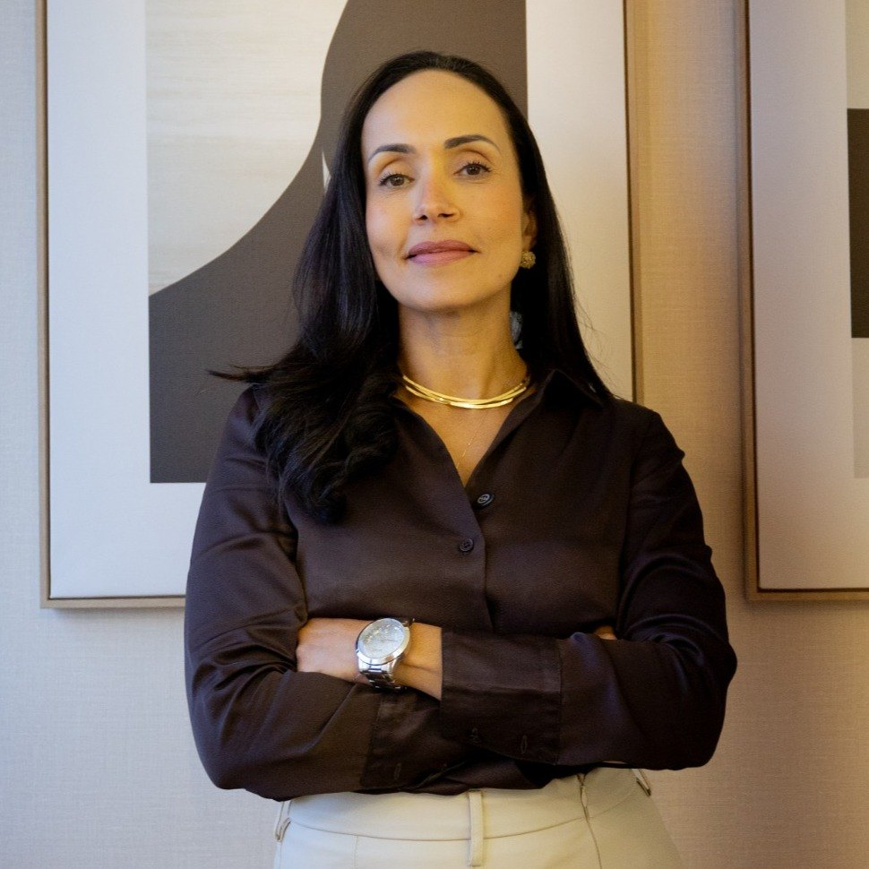
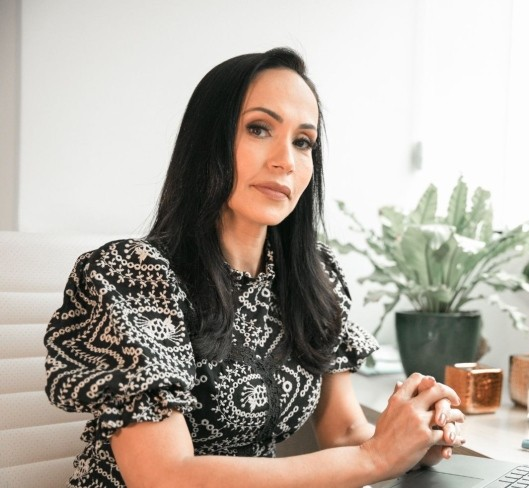

Início · Dra. Karyne
Dra. Karyne Barbosa, endocrinologista.
Karyne Freitas Barbosa tem registro de Endocrinologia e Metabologia (CRM-BA 19444 · RQE 7258), atua no Hospital Geral Roberto Santos desde 2014 e atende no consultório Endoslim, em Lauro de Freitas. Cada informação desta página tem a fonte ao lado.
A médica
Quem é a Dra. Karyne
“Tenho experiência de longo prazo no manejo de pacientes com obesidade, patologias tireoidianas, hipercolesterolemia, hipertrigliceridemias, diabetes e doenças da hipófise, osteoporose e endocrinologia geral. Meu método de trabalho se resume em atendimento humanizado, aplicando os conhecimentos da medicina com embasamento científico para o bem estar dos meus pacientes.”
Perfil da Dra. Karyne na Doctoralia · ver a fonte

Formação
Formação
Segundo a médica, ela se formou na Faculdade de Medicina da Universidade Federal da Bahia e fez clínica médica e endocrinologia no Hospital das Clínicas da Faculdade de Medicina da USP. Ela também informa o título da Sociedade Brasileira de Endocrinologia e Metabologia (SBEM).
O registro da especialidade, Endocrinologia e Metabologia, é o RQE 7258, publicado pela Rede D'Or e pela Doctoralia junto com o CRM-BA 19444.
Hospitais
No hospital
- Hospital Geral Roberto Santos · desde 2014Endocrinologista concursada, vínculo estatutário efetivo (CNES). Ela se apresenta como preceptora da residência em Endocrinologia e diz coordenar o ambulatório de diabetes e osteoporose.
- Hospital São Rafael · desde 2008Endocrinologista, como autônoma (CNES).
- Instituto de Oncologia da Bahia · 2008–2018Endocrinologista (CNES).
- Hospital e Maternidade São Camilo Pompeia, São Paulo · 2009–2012Médica clínica (CNES).
Fonte: CNES, vínculos atuais e histórico de vínculos.
Endoslim
O consultório
A Endoslim é o consultório dela no Edf. Mais Empresarial, no Buraquinho, em Lauro de Freitas. Segundo a Receita Federal, ela é sócia-administradora desde 2015; a página da clínica na Doctoralia a indica como responsável técnica.

Atualização
Congressos e entrevista
- ITC 2025: coautora de relato de caso do serviço do Roberto Santos sobre doença de Graves e lipodistrofia congênita generalizada, nos anais da revista da SBEM. Ver os anais.
- Congresso Mundial de Menopausa, Rio de Janeiro, 2026: participação como congressista, contada por ela no Instagram.
- “Mitos e verdades sobre tireoide”: entrevista no episódio 101 do “Médicos do Brasil convida”, 2021. Assistir.
Transparência
Como conferir
- Registro e especialidade: perfil na Doctoralia e busca da Rede D'Or.
- Vínculos hospitalares: CNES.
- Consultório: CNPJ 09.508.224/0001-83, na Receita Federal; página da clínica na Doctoralia.
- Avaliações: ficha do Google e Doctoralia.
Dúvidas frequentes
Perguntas comuns
Qual é o registro da Dra. Karyne?
CRM-BA 19444 e RQE 7258, de Endocrinologia e Metabologia.
Ela atende no Hospital Roberto Santos?
Ela é endocrinologista do hospital, que é público. A consulta particular é no consultório; veja onde atendo.
Ela atende crianças?
Não. Ela escreveu: “Eu não atendo crianças”. A Doctoralia informa atendimento de adultos.
Agende
Uma consulta com a Dra. Karyne, em Lauro de Freitas.
Consultório Endoslim, no 11º andar do Edf. Mais Empresarial, no Buraquinho. O agendamento é pelo WhatsApp do consultório, (71) 98158-2731.